LE PUR SANG DES AUTOMOBILES ✕ TRACK ONLY
BOLIDE
A track-only hypercar, built around the iconic W16 engine.
The MeteoriteLe Météore
From 19th-century French — bolide: a meteor that crosses the atmosphere at speed and burns out on its way to earth.
From a blank sheet to a drivable car took less than a year. Extreme loads, acceleration and lap times were validated in simulation first, then turned into metal.times virtually — then built it.
In December 2020, photos and film were released. It began as "a drivable experimental vehicle"; in August 2021, at The Quail in Monterey, Bugatti announced production: 40 units, at four million euros each.
The Online Reveal
A film · A sentenceIntroduced by film, opening with "The Bugatti Bolide is real." Two days later it arrived in CSR Racing 2, letting the world experience it first.
The Production Decision
40 units · 4m eurosBugatti announced a limited production run. The run of 40 was driven by customer demand worldwide.
Deliveries Begin
Hand-built in MolsheimEvery car is finished by hand in Molsheim, to the same standard as any collectible Bugatti. The difference: this one is track-only.

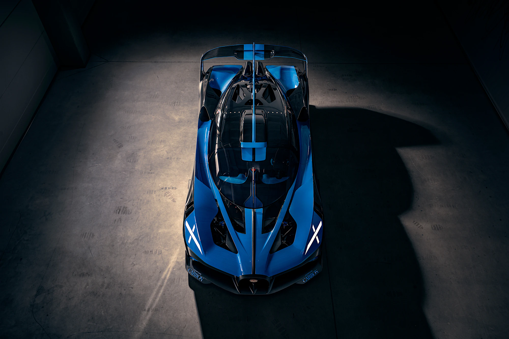
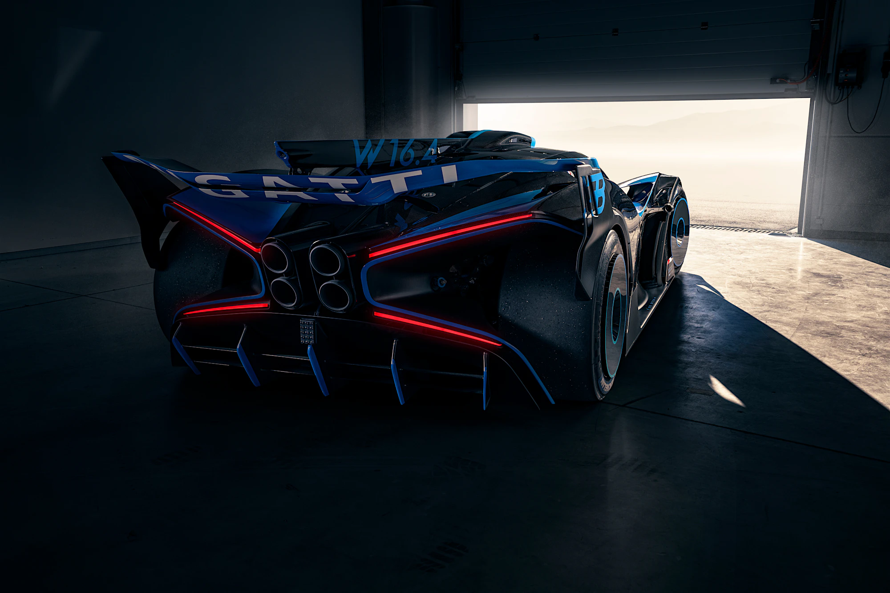
Form Follows PerformanceMolsheim Design Studio
"Design and technology flow into one another." — Deputy Design Director Frank Heyl
The design team works to a single rule: every technical decision has to show on the surface.
Front splitter, air curtains, winglets, side intercoolers — every result of the aerodynamic development lands directly on the bodywork.
The Horseshoe Grille
115 years of Bugatti DNA, carrying both structure and aero function.
The X
Taken from the X-planes of aviation history: X-shaped taillights framing the central exhaust, running from the nose through the cockpit to the seats.
Physical Mirrors
Cameras were rejected — physical mirrors let drivers judge distances faster.
These archival drawings — aerodynamic analysis, top-view layout, interior vision — still mark where every technical decision landed.
Every surface is working
From sketch to carbon bodywork — every line maps to a technical decision.
Design and technology flow into one another in the Bolide. Every technical consideration has been translated directly into an aesthetic design.
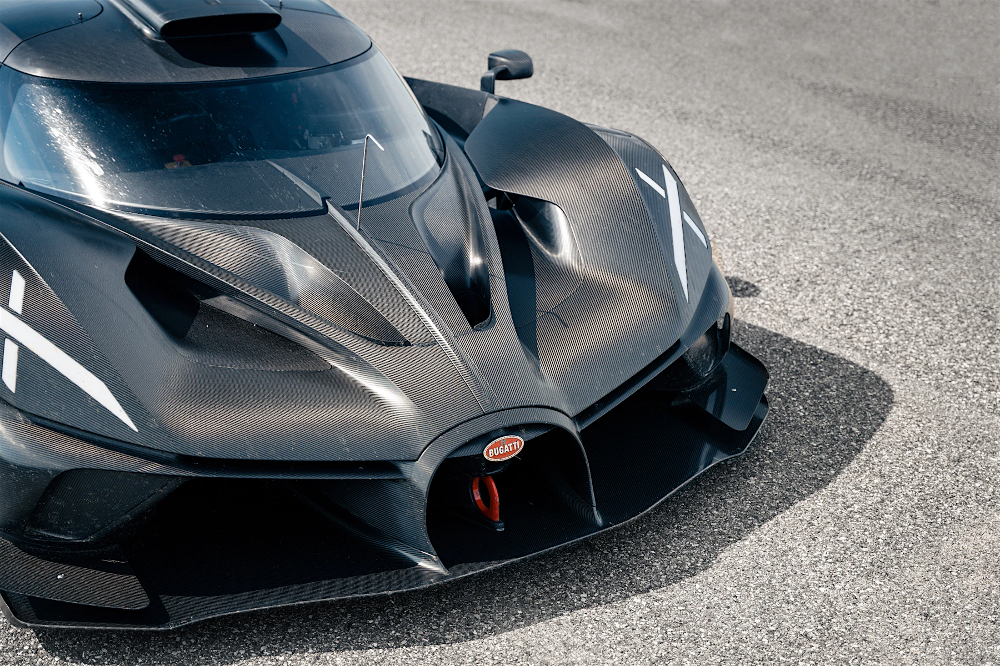
The Front Splitter
Under hard braking the nose drops, the splitter closes on the ground and downforce rises — yet the front axle's downforce is deliberately capped to preserve aero balance.
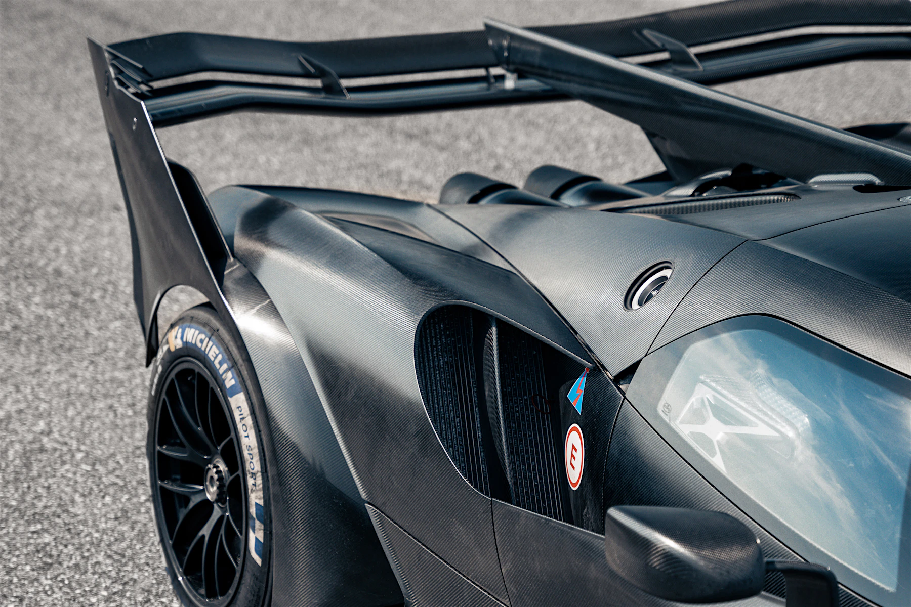
The Adjustable Wing
The rear wing adapts to each circuit's character, balancing downforce against drag — a development process that usually exists only at the top level of motorsport.
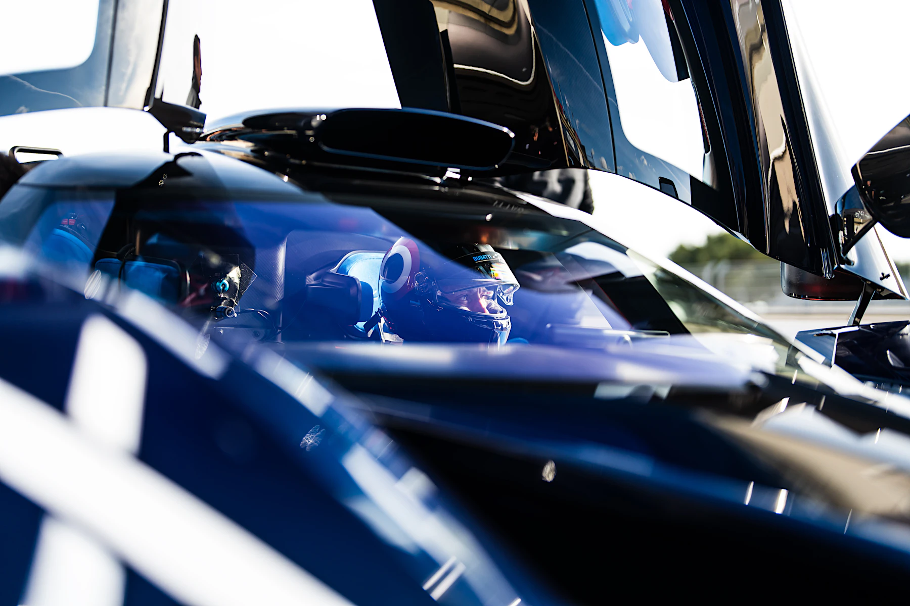
Air Curtains & Vortices
Air curtains ahead of the front wheels guide the flow around the car; winglets on the splitter's edges create vortices that feed the diffuser.
The W16, Unleashed8.0 L — Quad Turbo
Race track optimization means recalculating everything.
The W16 powered every road-going Bugatti for twenty years. In the Bolide, it is re-engineered for the track.
Turbochargers and lubrication systems were redesigned for higher temperatures and forces; intake and exhaust were de-throttled for faster response. The powertrain sits 60 mm further forward than in the Chiron, optimizing track weight distribution. The monocoque meets FIA LMH/LMDh requirements — the same standards as Le Mans prototypes.
Manufacturing: building its own standard for a car with no benchmark.
A 3D-printed titanium pushrod weighs 100 grams and transmits up to 3.5 tonnes, with 0.1 mm precision; the X bracket weighs 300 grams and carries more than 700 kg. Every Bolide passes final inspection and circuit testing at Mirecourt.
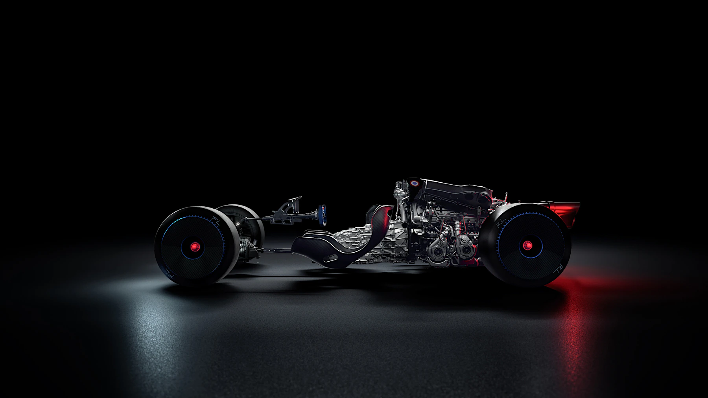
Hover to explore ✕on par with F1 / LMh machinery
LMP1 prototype architecture
7,993 cc · quad turbo
de-throttled intake and exhaust
powertrain 60 mm forward vs. Chiron
With Brembo, braking at Formula 1 level
Carbon-carbon 390 mm discs on par with LMh/LMDh and Formula 1 machinery; the front caliper is the largest Brembo has ever fitted to a racing car, with 8 pistons and dedicated cooling ducts.
To pass these stringent but critical safety tests, we needed to ensure that everything about the monocoque was technically perfect.
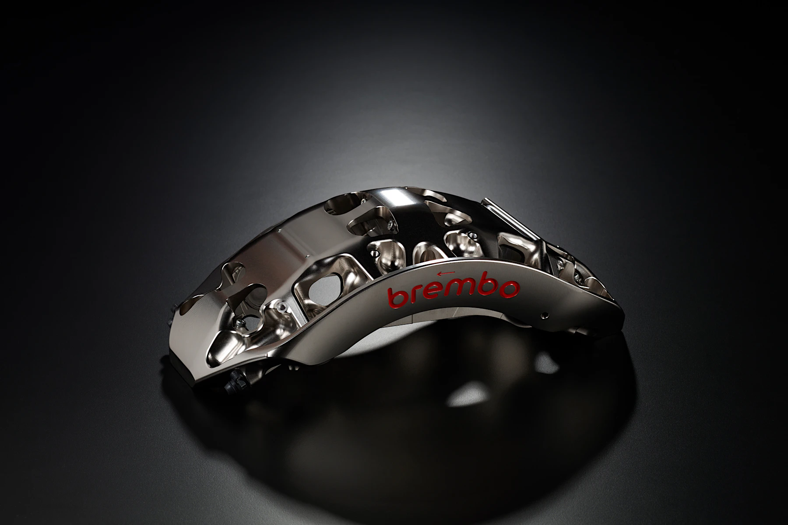
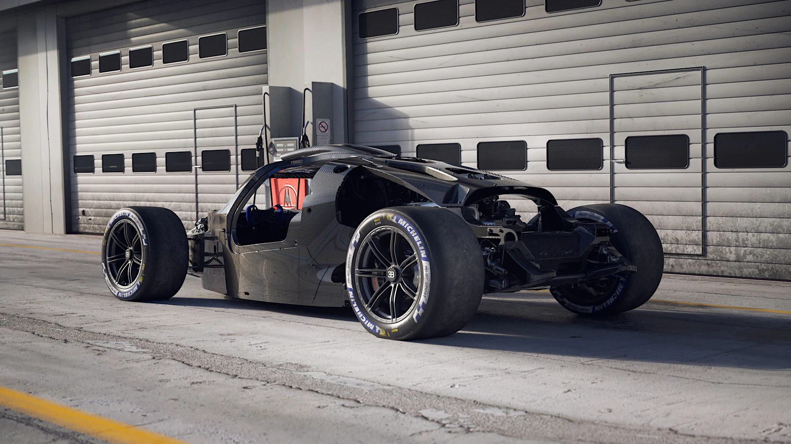
The NumbersMeasured on the Track
When the engine, the body and the aerodynamics are wound to their limits, these are the numbers that remain.
Acceleration
Braking
Ultimate Aerodynamics
In a corner, the 1,450 kg car is pressed onto the asphalt by nearly three tons of downforce — its weight grows "backwards". This is why it is easy to drive.
In a corner, the 1,450 kg car is pressed onto the asphalt by nearly three tons of downforce. Under braking the front splitter closes on the ground, and downforce tracks speed and load in real time — this is why it is easy to drive.
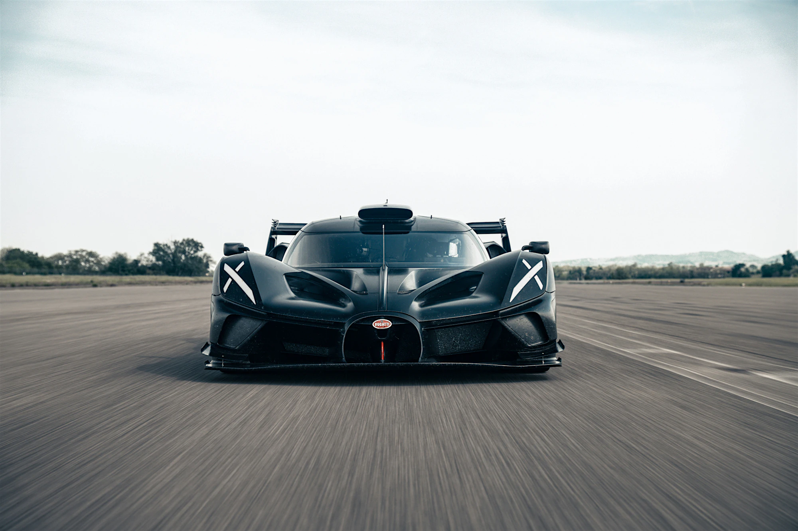
The Purity of Track DrivingThe Cockpit
The cockpit draws its inspiration from LMP1 prototypes — everything unrelated to driving was asked to leave.
The wraparound cockpit keeps only the wheel, the pedals, one essential screen, and the driver.
Restraint in service of driving — every material and stitch serves the drive. Entry was designed with equal care: the outer sections of the wraparound headrest fold away for easier access.
The Wheel
Feel in corners refined through extensive tuning; a piece of sculpture at rest.
The Seat
X-theme multi-pad structure, providing support at 2.5 G lateral acceleration.
The Headrest
Deformation in a crash, validated to FIA LMH/LMDh standards.
The 3D-printed X bracket weighs 300 grams and carries more than 700 kg; the FIA LMH/LMDh safety standard was translated into details the driver will never see.
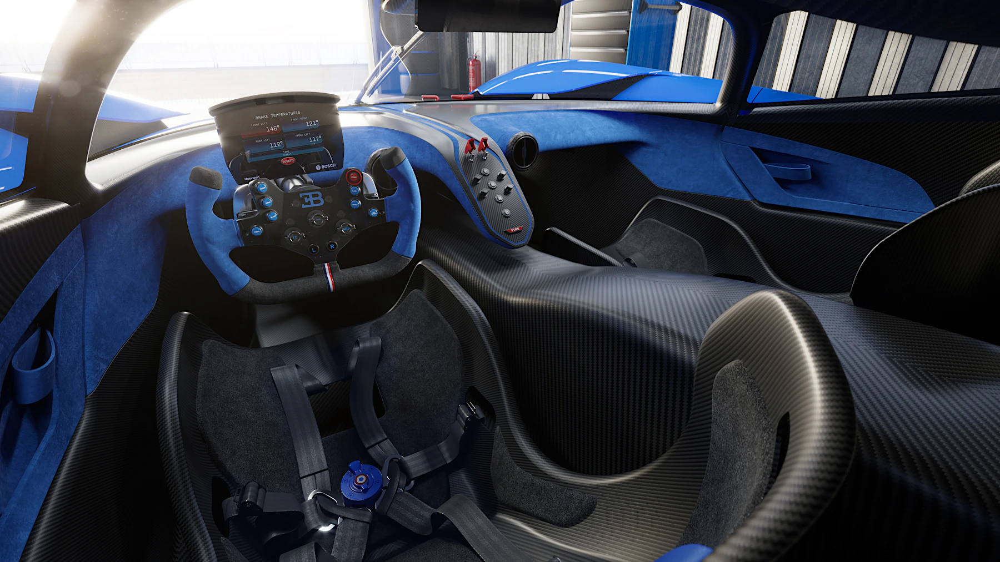
Let the driver forget the interior exists
The 3D-printed X bracket weighs 300 grams and carries more than 700 kg; the FIA LMH/LMDh safety standard was translated into details the driver will never see.
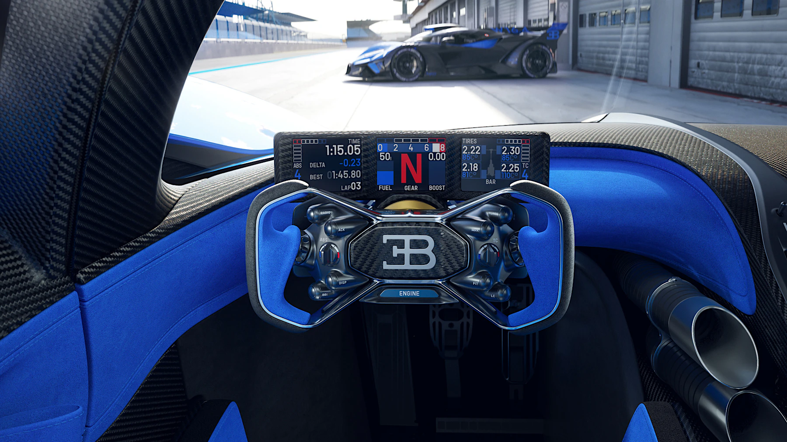
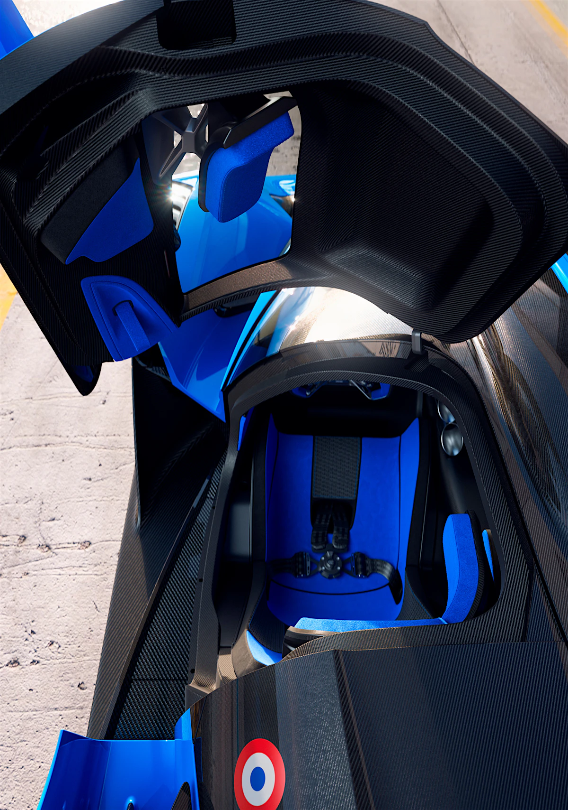
A Life Written on TrackTrack Chronicle
From the Le Mans centenary to its owners' first full throttle — the trail is all on asphalt.
The prototype enters the next phase of testing
In autumn 2020 the Bolide was an online film; two and a half years later the prototype was running high-intensity development on real circuits — simulation done, time for the real thing.esting on real circuits — virtual simulation complete, physical validation begins.
Public dynamic debut at the centenary
At the centenary of the 24 Hours of Le Mans, the Bolide made its public dynamic debut. At the wheel: Andy Wallace — Le Mans winner, Bugatti Pilote Officiel.
Hillclimb debut at Goodwood
At the Festival of Speed, the Bolide completed its hillclimb debut. For the first time, the W16 was heard in full.
Type 35 centenary edition × Laguna Seca
At Monterey Car Week, the centenary-edition Bolide shared the asphalt with the Type 35 — exactly a century after the Type 35's first race.
Inaugural 'Feeling The Track'
The first owner track event took place at Circuit Paul Ricard. The same day, Bugatti unveiled Équipe Pur Sang — a dedicated Bolide liveried in Bugatti's racing colors.
This was the moment we had all been working toward — witnessing multiple Bolide examples unleashed on the track together.
Owner track day at Paul Ricard
Sighting laps, convoy driving, individual preparation — multiple Bolides running together for the first time, with Bugatti technicians on hand throughout.
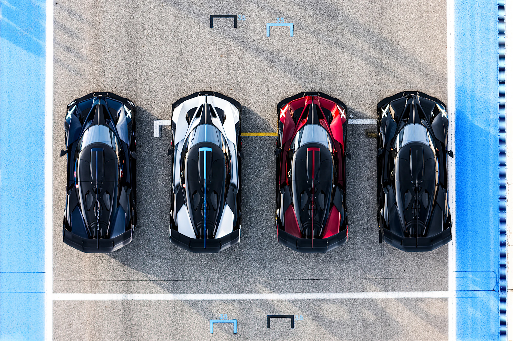
The first owner, on the Circuit of the Americas, in the rain
An American owner drove his freshly delivered Bolide at COTA — a Christmas gift to himself. After the rain-soaked laps, his verdict: "Incredibly easy to handle. The surge of power is incomparable."
Miami: eight Bolides together
The largest gathering of Bolides to date. At first light at the Miami International Autodrome, eight Bolides lined up in the F1 pit lane. Professional coaching and motorsport-level technical support, tailored to every owner.
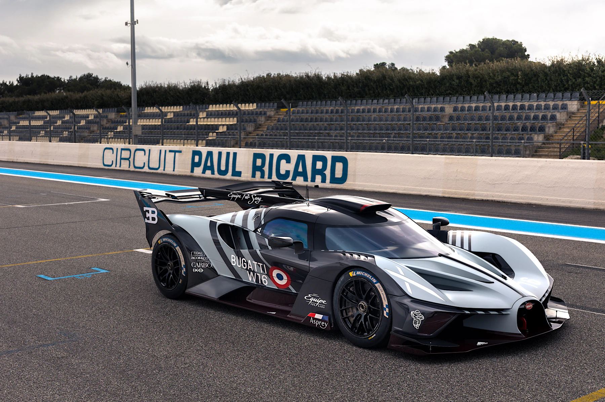
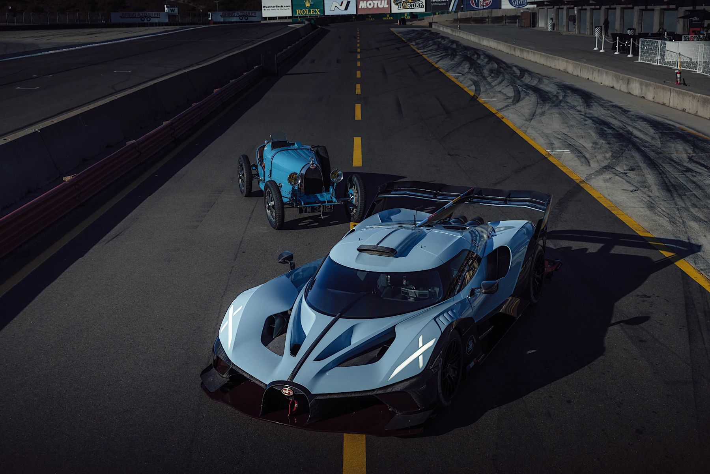
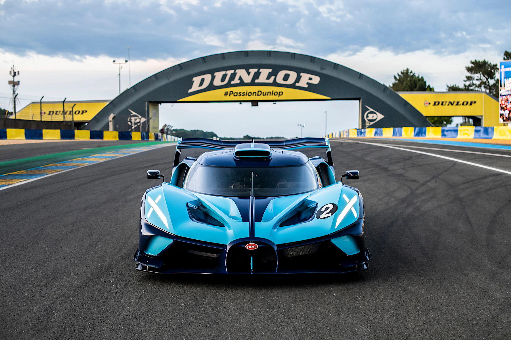
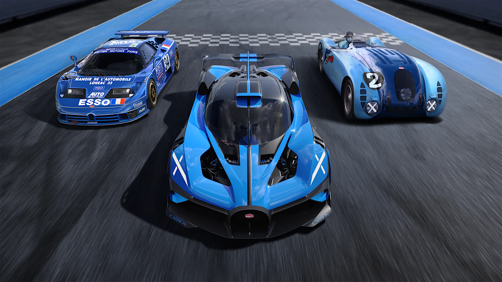
A Vision Becomes Legacy40 Units — Molsheim Atelier
In November 2025, the final Bolide was completed at the Molsheim Atelier.
40 cars, 40 stories
From the Atelier in Molsheim to circuits worldwide — 40 cars bring the W16 to a close.
Finished in iconic French Racing Blue with Nocturne accents, the last car was commissioned by its owner as a tribute to Bugatti's racing history.
With its completion, the project draws to a close: from the online reveal of 2020 to the final delivery, the W16 concludes in 40 cars.f 40. The Bolide and the W16 Mistral are the last Bugattis powered by the W16.
We set out to create a car that can perform on the racetrack yet also belongs in the world's finest collections.
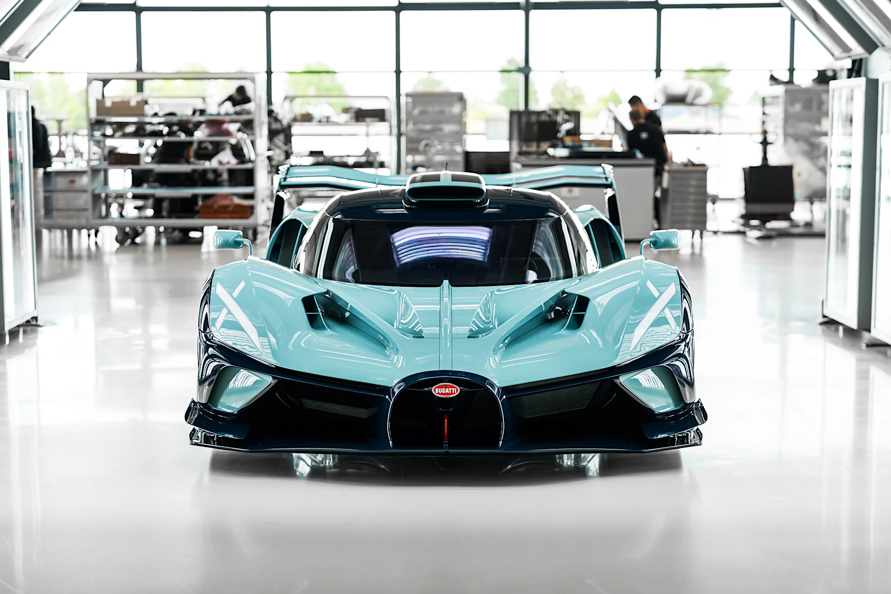